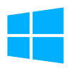
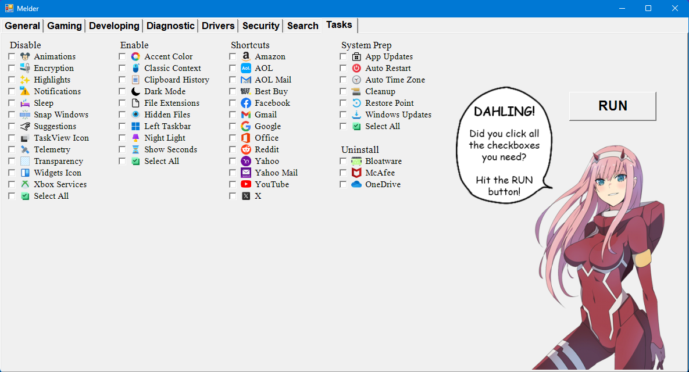
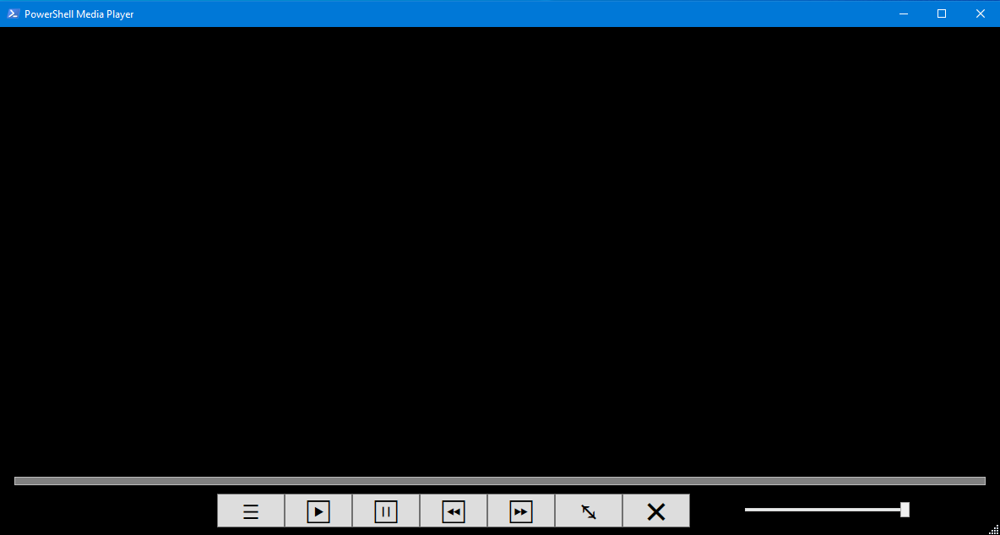
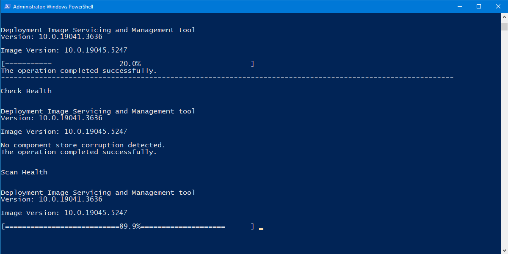
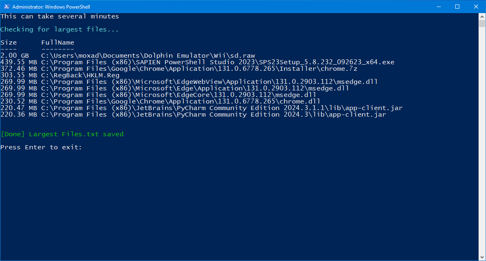
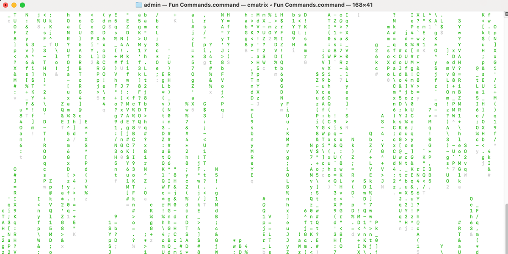
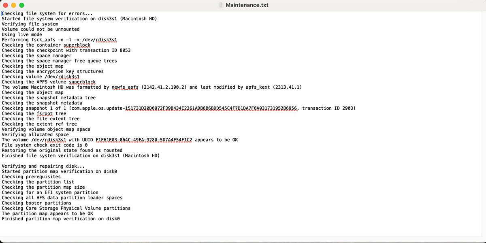
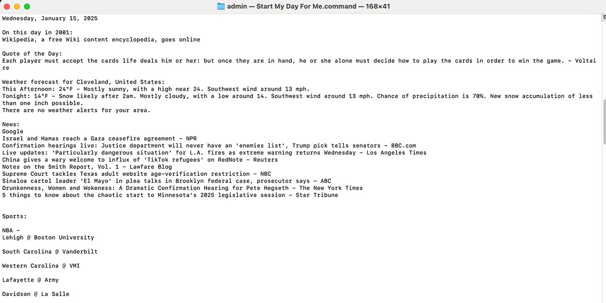
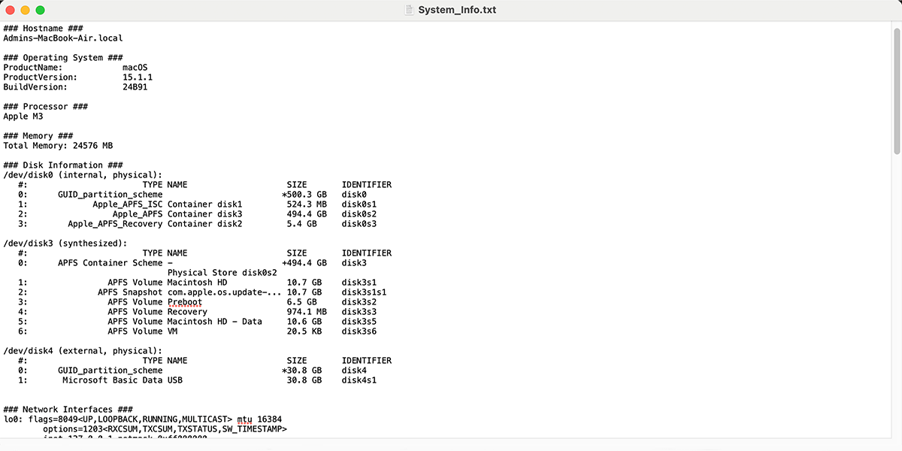

Toolbox
Downloads
Choose from Windows and macOS utilities built to simplify common PC tasks.

Windows Scripts
PowerShell scripts for Windows systems.
Gallery For Windows Scripts




| Download | Scripts | Description |
|---|---|---|
| BitLocker Recovery Key | Get the BitLocker Recovery Key. Requires being inside Windows. | |
| DeBloater | Remove bloatware from Windows 10/11. | |
| Fun Commands | Non productive commands. Cat Fact, Games, Matrix, Prank, Songs, and Text to Speech. | |
| Group Policy Editor | Adds Group Policy Editor to Windows 10/11 Home editions. | |
| Installed Apps | Creates a list of installed apps, useful for reinstallation. Saves data to the Desktop. | |
| Largest Files | Lists the top 10 largest files on your device to identify storage hogs. | |
| Maintenance | Automated maintenance for Windows, including updates, cleanup, and optimization. | |
| Media Player | Plays video or audio files with a modern UI. Includes playback buttons and volume slider. | |
| Melder | Streamline your PC setup with this GUI tool to automate App installs, updates, enable/disable settings, shortcuts, and cleanup. | |
| Mouse Jiggler | Moves the mouse pointer automatically every 5 seconds. Press Esc to exit. | |
| Network Fix | Test network connectivity, reset network settings, DNS Jumper, Speedtest, save results. | |
| OneDrive Backup | Backup your OneDrive folder to an external drive. Requires being online and an external drive connected. | |
| Print Spooler Fix | Clears the print spooler when a printer gets stuck and doesn't print. | |
| Recon | Get an extreme detailed list of system information on your target PC. | |
| Repair Tool | Runs DISM and SFC to check and repair Windows corruption. | |
| Start My Day | Start your day with knowledge, including weather, news, sports, and more. API setup required. | |
| System Info | Generates detailed system information, including battery details for laptops. | |
| Update Fix | Fixes issues with downloading Windows Updates. Includes additional recovery options. | |
| Wi-Fi Info | Lists Wi-Fi SSID names and passwords previously used on the PC. Saves results as a text file. | |
| Windows Security Fix | Re-enable Windows Security, Repair Windows Security, Ensure Defender services start automatically, clear Group Policy Settings, Re-register Defender WMI components. |
Mac Scripts
Shell scripts for macOS.
Gallery For Mac Scripts




Copy and paste this command into Terminal to install the Melding Software Mac scripts.
After reopening Terminal, type MeldingSoftware anytime to load the list.
curl -fsSL https://raw.githubusercontent.com/MeldingSoftware/Scripts/main/Mac/install.sh | bash
| Scripts | Description |
|---|---|
| DeBloater | Remove bloatware, non SIP Apps. |
| Fun Commands | Includes fun terminal commands like ASCII art, quotes, and more. |
| Installed Apps | Creates a list of installed apps, useful for reinstallation. Saves data to the Desktop. |
| Largest Files | Lists the top 10 largest files on your device to identify storage hogs. |
| Maintenance | Automated maintenance for Mac, including disk checks and updates. |
| Melder | Streamline your PC setup with this GUI tool to automate App installs, updates, and system tweaks. |
| Print Spooler Fix | Clears the print spooler when a printer gets stuck and doesn't print. |
| Recon | Get an extreme detailed list of system information on your target PC. |
| Repair Tool | Checks and repairs the Mac file system and disk. |
| System Info | Generates detailed system information for Mac devices. |
| Update Fix | Fixes issues with downloading Mac updates. Includes additional recovery options. |
| Wi-Fi Info | Displays current Wi-Fi SSID and password. Saves results as a text file. Requires admin password. |